重置单行 → Đặt lại dòng đơn: Đặt lại trạng thái và dữ liệu của dòng này về trạng thái ban đầu.
编辑配置 → Sửa cấu hình: Chỉnh sửa cấu hình chạy tự động cho dòng này (nhiệm vụ, thiết lập, v.v.).
代理信息 → Thông tin proxy: Xem hoặc chỉnh sửa thông tin proxy (máy chủ proxy) cho dòng này.
清理登录 → Dọn dẹp đăng nhập: Xóa thông tin đăng nhập (cache, session) của dòng này để đăng nhập lại.
屏显开关 → Bật/tắt hiển thị màn hình: Bật hoặc tắt hiển thị overlay/màn hình cho dòng này (chỉ ảnh hưởng dòng đang chọn).
💡 Lưu ý: Menu này chỉ áp dụng cho dòng bạn đã chọn (có checkbox được tick). Các thao tác này chỉ ảnh hưởng đến dòng cụ thể đó, không ảnh hưởng đến các dòng khác.
Quy trình sử dụng cơ bản:
Nhập hoặc 批量导入 tài khoản vào danh sách
Thiết lập 游戏路径 (đường dẫn game)
Cấu hình 全局配置 hoặc cấu hình riêng từng dòng bằng 编辑配置
Chọn dòng, nhấn 添加任务 để gán nhiệm vụ tự động
Nhấn 启动选中 hoặc 启动全部 để bắt đầu chạy
Theo dõi trạng thái qua các cột trong bảng
Khi cần, dùng các nút 暂停, 停止, hoặc 恢复 tương ứng
⚙️ Detail - Hướng Dẫn Cấu Hình Chi Tiết
Phần này cung cấp hướng dẫn chi tiết về cách cấu hình và thiết lập tool để sử dụng hiệu quả.
Cấu hình cơ bản (基础设置)
Phần này hướng dẫn cách cấu hình các thiết lập cơ bản cho script tự động, bao gồm thông tin script, quy tắc nhân vật và các tùy chọn khác.
Ảnh 1: Cửa sổ cấu hình cơ bản
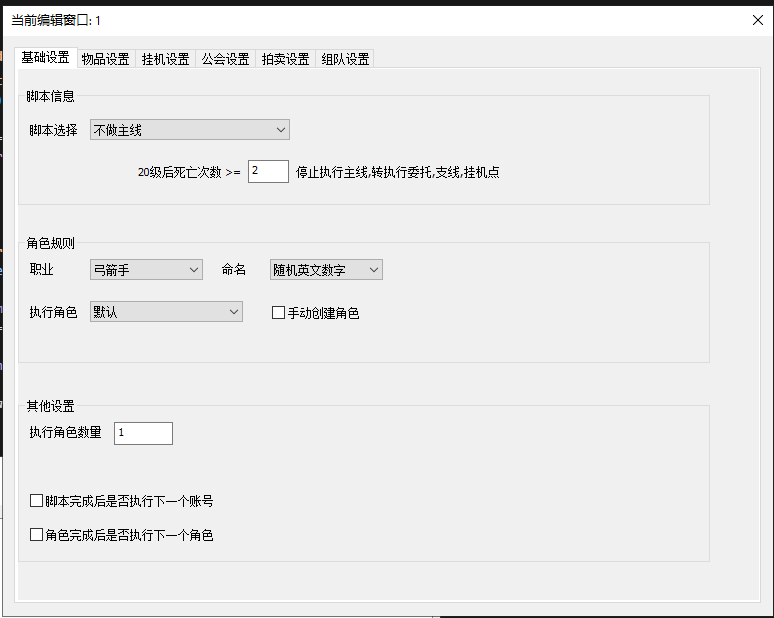
Giải thích:
Đây là cửa sổ cấu hình cơ bản (基础设置), nơi bạn có thể thiết lập các thông số cho script tự động. Cửa sổ này được chia thành 3 phần chính:
1. 脚本信息 (Script Information) - Thông tin script
脚本选择 → Chọn script: Dropdown để chọn loại script tự động sẽ chạy
Các tùy chọn có sẵn được giải thích chi tiết ở ảnh 1.1
Mô tả: "停止执行主线,转执行委托,支线,挂机点" → "Dừng thực hiện nhiệm vụ chính, chuyển sang thực hiện nhiệm vụ ủy thác, nhiệm vụ phụ, điểm treo máy"
2. 角色规则 (Character Rules) - Quy tắc nhân vật
职业 → Nghề nghiệp: Dropdown chọn nghề nghiệp cho nhân vật (các tùy chọn ở ảnh 1.2)
命名 → Đặt tên: Dropdown chọn cách đặt tên nhân vật (các tùy chọn ở ảnh 1.3)
执行角色 → Nhân vật thực thi: Dropdown chọn nhân vật để thực thi (các tùy chọn ở ảnh 1.4)
手动创建角色 → Tạo nhân vật thủ công: Checkbox để bật/tắt tạo nhân vật thủ công
3. 其他设置 (Other Settings) - Cài đặt khác
执行角色数量 → Số lượng nhân vật thực thi: Ô nhập số lượng nhân vật sẽ được tạo/thực thi (mặc định: 1)
脚本完成后是否执行下一个账号 → Hoàn thành script có thực thi tài khoản tiếp theo không: Checkbox để tự động chuyển sang tài khoản tiếp theo sau khi script hoàn thành
角色完成后是否执行下一个角色 → Hoàn thành nhân vật có thực thi nhân vật tiếp theo không: Checkbox để tự động chuyển sang nhân vật tiếp theo sau khi nhân vật hiện tại hoàn thành
💡 Lưu ý: Các cấu hình ở đây sẽ áp dụng cho cửa sổ đang được chỉnh sửa (hiển thị ở tiêu đề: "当前编辑窗口: 1" - Cửa sổ đang chỉnh sửa: 1).
Ảnh 1.1: Dropdown 脚本选择 (Chọn script)
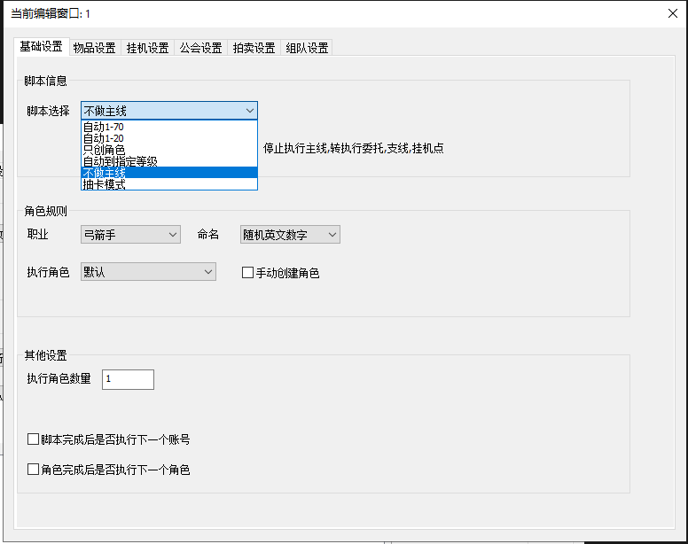
Giải thích các tùy chọn trong dropdown 脚本选择:
不做主线 → Không làm nhiệm vụ chính: Script sẽ dừng thực hiện nhiệm vụ chính, chuyển sang thực hiện nhiệm vụ ủy thác, nhiệm vụ phụ và điểm treo máy
自动1-70 → Tự động 1-70: Script tự động chơi từ cấp 1 đến cấp 70
自动1-20 → Tự động 1-20: Script tự động chơi từ cấp 1 đến cấp 20
只创角色 → Chỉ tạo nhân vật: Script chỉ tạo nhân vật mới, không thực hiện các nhiệm vụ
自动到指定等级 → Tự động đến cấp chỉ định: Script tự động chơi đến cấp độ mà bạn chỉ định
抽卡模式 → Chế độ rút thẻ: Script sẽ chạy ở chế độ rút thẻ/gacha
💡 Mẹo: Tùy chọn 不做主线 phù hợp khi bạn muốn nhân vật tập trung vào nhiệm vụ phụ và treo máy thay vì nhiệm vụ chính.
Ảnh 1.2: Dropdown 职业 (Nghề nghiệp)
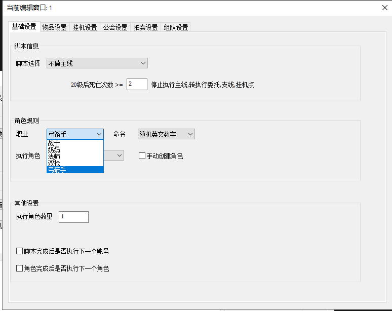
Giải thích các tùy chọn trong dropdown 职业:
Dropdown này cho phép bạn chọn nghề nghiệp (class) cho nhân vật sẽ được tạo:
弓箭手 → Xạ thủ: Nhân vật sử dụng cung tên (Archer)
Các nghề nghiệp khác: Tùy thuộc vào game, có thể có các nghề nghiệp khác như:
战士 → Chiến sĩ (Warrior)
法师 → Pháp sư (Mage)
刺客 → Sát thủ (Assassin)
牧师 → Mục sư (Priest/Healer)
Và các nghề nghiệp khác trong game
💡 Lưu ý: Nghề nghiệp được chọn sẽ áp dụng cho tất cả nhân vật được tạo tự động trong cửa sổ này.
Ảnh 1.3: Dropdown 命名 (Đặt tên)
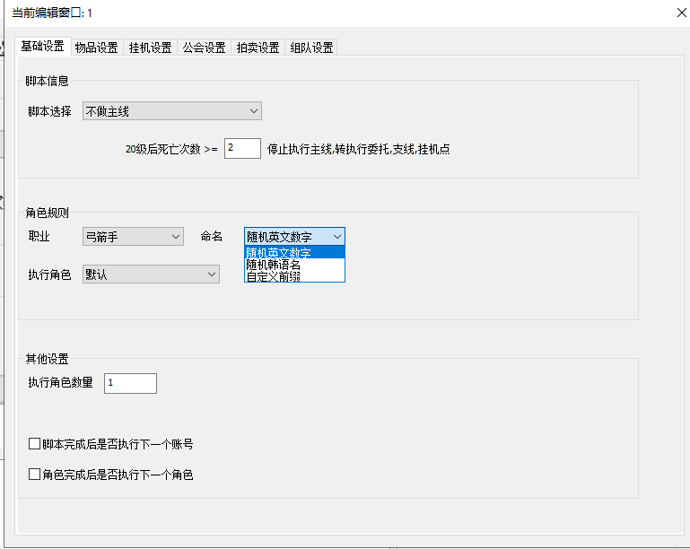
Giải thích các tùy chọn trong dropdown 命名:
Dropdown này cho phép bạn chọn cách đặt tên cho nhân vật:
随机英文数字 → Ngẫu nhiên chữ cái và số tiếng Anh: Tự động tạo tên nhân vật bằng chữ cái và số ngẫu nhiên (ví dụ: abc123, xyz789)
Các tùy chọn khác có thể có:
随机中文 → Ngẫu nhiên tiếng Trung: Tên nhân vật bằng tiếng Trung ngẫu nhiên
自定义 → Tùy chỉnh: Nhập tên tùy chỉnh
前缀+随机 → Tiền tố + Ngẫu nhiên: Tên có tiền tố cố định + phần ngẫu nhiên
手动命名 → Đặt tên thủ công: Bạn sẽ tự đặt tên khi tạo nhân vật
💡 Mẹo: Tùy chọn 随机英文数字 giúp tạo tên nhanh chóng và tránh trùng lặp.
Ảnh 1.4: Dropdown 执行角色 (Nhân vật thực thi)
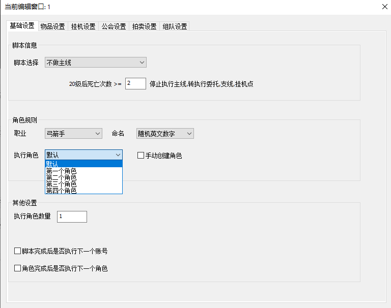
Giải thích các tùy chọn trong dropdown 执行角色:
Dropdown này cho phép bạn chọn nhân vật nào sẽ được sử dụng để thực thi script:
默认 → Mặc định: Sử dụng nhân vật mặc định (thường là nhân vật đầu tiên hoặc nhân vật chính)
Các tùy chọn khác có thể có:
第一个角色 → Nhân vật đầu tiên: Luôn sử dụng nhân vật đầu tiên trong danh sách
最后一个角色 → Nhân vật cuối cùng: Luôn sử dụng nhân vật cuối cùng trong danh sách
按顺序 → Theo thứ tự: Sử dụng nhân vật theo thứ tự trong danh sách
随机选择 → Chọn ngẫu nhiên: Chọn ngẫu nhiên một nhân vật để thực thi
指定角色 → Chỉ định nhân vật: Chọn một nhân vật cụ thể
💡 Lưu ý: Tùy chọn 默认 thường là lựa chọn phù hợp nhất cho hầu hết trường hợp sử dụng.
Cài đặt vật phẩm (物品设置)
Phần này hướng dẫn cách cấu hình các thiết lập về vật phẩm, bao gồm tự động mua vật phẩm, xử lý vật phẩm, mua hàng tại cửa hàng, chế tạo và nâng cấp.
Ảnh 2.1: 补给设置 (Cài đặt bổ sung)
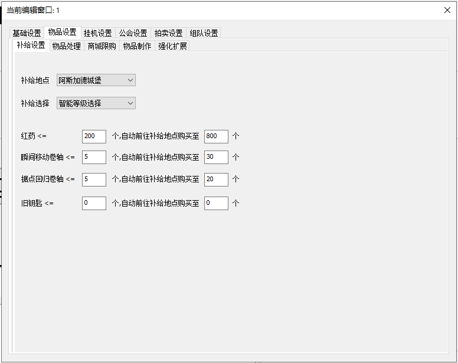
Giải thích:
Đây là tab 补给设置 (Cài đặt bổ sung), cho phép bạn cấu hình tự động mua vật phẩm khi số lượng giảm xuống dưới ngưỡng.
1. 补给地点 (Supply Location) - Địa điểm bổ sung
Dropdown để chọn địa điểm mua vật phẩm
阿斯加德城堡 → Lâu đài Asgard: Một trong các địa điểm có thể chọn
Có thể có các địa điểm khác tùy theo game
2. 补给选择 (Supply Selection) - Lựa chọn bổ sung
Dropdown để chọn cách thức bổ sung
智能等级选择 → Chọn thông minh theo cấp độ: Tự động chọn vật phẩm phù hợp với cấp độ hiện tại
3. Cấu hình tự động mua vật phẩm
Mỗi dòng cấu hình có format: [Tên vật phẩm] <= [Số lượng tối thiểu] 个, 自动前往补给地点购买至 [Số lượng mua đến] 个
红药 → Thuốc đỏ:
Khi số lượng <= 200, tự động đến địa điểm bổ sung mua đến 800
瞬间移动卷轴 → Cuộn dịch chuyển tức thời:
Khi số lượng <= 5, tự động mua đến 30
据点回归卷轴 → Cuộn quay về căn cứ:
Khi số lượng <= 5, tự động mua đến 20
旧钥匙 → Chìa khóa cũ:
Khi số lượng <= 0, tự động mua đến 0 (có thể tắt tính năng này bằng cách đặt = 0)
💡 Lưu ý: Đặt giá trị = 0 cho cả hai trường sẽ tắt tính năng tự động mua vật phẩm đó. Tool sẽ tự động kiểm tra và mua vật phẩm khi số lượng xuống dưới ngưỡng.
Ảnh 2.2: 物品处理 (Xử lý vật phẩm)
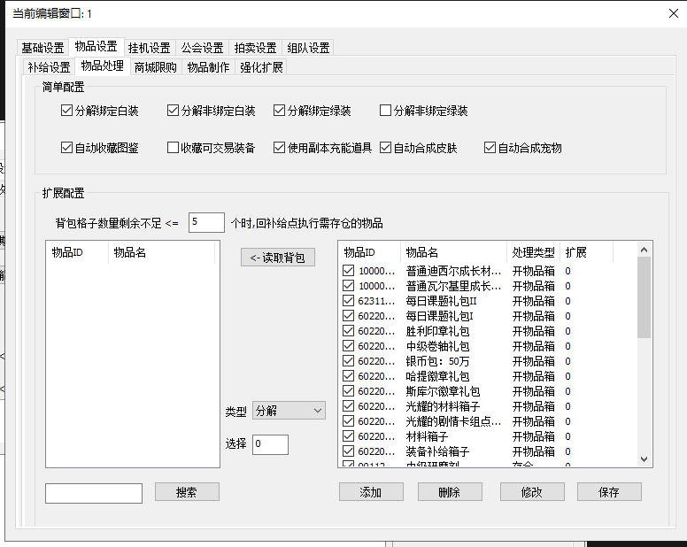
Giải thích:
Đây là tab 物品处理 (Xử lý vật phẩm), cho phép bạn cấu hình tự động xử lý các vật phẩm như phân giải, thu thập, sử dụng, v.v.
1. 简单配置 (Simple Configuration) - Cấu hình đơn giản
Các checkbox tự động xử lý vật phẩm:
分解绑定白装 → Phân giải trang bị trắng đã gắn: Tự động phân giải trang bị màu trắng đã gắn vào nhân vật
分解非绑定白装 → Phân giải trang bị trắng chưa gắn: Tự động phân giải trang bị màu trắng chưa gắn
分解绑定绿装 → Phân giải trang bị xanh lá đã gắn: Tự động phân giải trang bị màu xanh lá đã gắn
分解非绑定绿装 → Phân giải trang bị xanh lá chưa gắn: Tự động phân giải trang bị màu xanh lá chưa gắn
自动收藏图鉴 → Tự động thu thập bộ sưu tập: Tự động thu thập vật phẩm vào bộ sưu tập
收藏可交易装备 → Thu thập trang bị có thể giao dịch: Tự động thu thập trang bị có thể giao dịch
使用副本充能道具 → Sử dụng vật phẩm nạp năng lượng phó bản: Tự động sử dụng vật phẩm nạp năng lượng cho phó bản
自动合成皮肤 → Tự động hợp thành trang phục: Tự động hợp thành trang phục từ vật liệu
自动合成宠物 → Tự động hợp thành thú cưng: Tự động hợp thành thú cưng từ vật liệu
2. 扩展配置 (Extended Configuration) - Cấu hình mở rộng
背包格子数量剩余不足 <= [Số] 个时,回补给点执行需存仓的物品 → Khi số ô túi còn lại <= [Số], quay về điểm bổ sung để cất vật phẩm cần lưu kho
Khi số ô trống trong túi <= 5, tự động quay về điểm bổ sung để cất vật phẩm vào kho
3. Quản lý vật phẩm chi tiết
Bảng trái (Tìm kiếm/Thêm):
物品ID → ID vật phẩm: Nhập ID vật phẩm để tìm
物品名 → Tên vật phẩm: Nhập tên vật phẩm để tìm
搜索 → Tìm kiếm: Nút tìm kiếm vật phẩm
类型 → Loại: Dropdown chọn loại xử lý (ví dụ: "分解" - Phân giải)
选择 → Chọn: Ô nhập giá trị (ví dụ: 0)
读取背包 → Đọc túi: Nút đọc danh sách vật phẩm từ túi
添加 → Thêm: Thêm vật phẩm vào danh sách xử lý
删除 → Xóa: Xóa vật phẩm khỏi danh sách
修改 → Sửa: Sửa cấu hình vật phẩm
保存 → Lưu: Lưu cấu hình
Bảng phải (Danh sách vật phẩm đã cấu hình):
Hiển thị danh sách vật phẩm với các cột:
Checkbox: Bật/tắt xử lý vật phẩm này
物品ID: ID vật phẩm
物品名: Tên vật phẩm
处理类型 → Loại xử lý: Cách xử lý (ví dụ: "开物品箱" - Mở hộp vật phẩm)
扩展 → Mở rộng: Giá trị mở rộng (thường là 0)
Ví dụ các vật phẩm: Hộp vật liệu, Hộp phần thưởng, Gói bạc, Hộp trang bị, v.v.
💡 Mẹo: Sử dụng 读取背包 để tự động đọc danh sách vật phẩm từ túi và thêm vào danh sách xử lý.
Ảnh 2.3: 商城限购 (Giới hạn mua hàng tại cửa hàng)
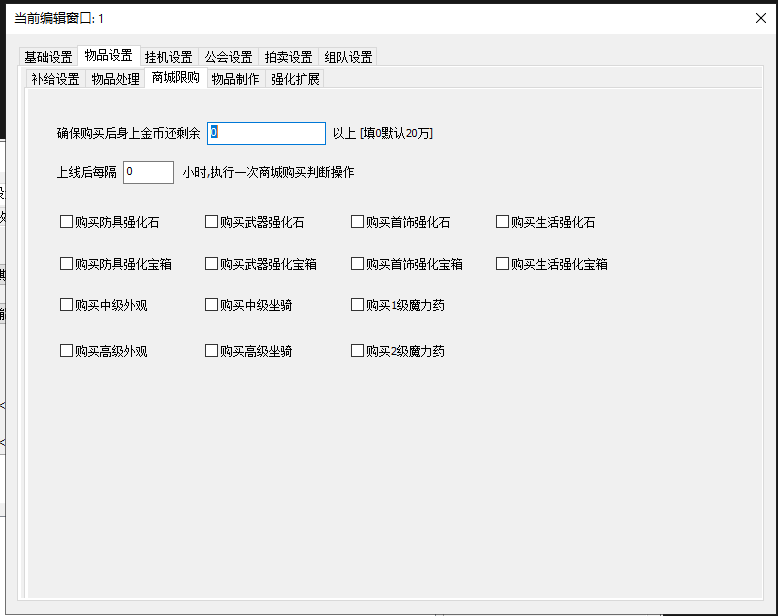
Giải thích:
Đây là tab 商城限购 (Giới hạn mua hàng tại cửa hàng), cho phép bạn cấu hình tự động mua vật phẩm từ cửa hàng trong game.
1. Cài đặt chung
确保购买后身上金币还剩余 [Số] 以上[填0默认20万] → Đảm bảo sau khi mua, số vàng còn lại >= [Số] [Điền 0 = mặc định 200,000]
Đảm bảo luôn giữ lại số vàng tối thiểu sau khi mua (mặc định: 200,000 nếu điền 0)
上线后每隔 [Số] 小时,执行一次商城购买判断操作 → Sau khi đăng nhập, mỗi [Số] giờ, thực hiện một lần kiểm tra và mua hàng tại cửa hàng
Kiểm tra và mua hàng tự động theo chu kỳ (điền 0 để tắt)
2. Danh sách vật phẩm mua tự động
Các checkbox để chọn vật phẩm sẽ tự động mua:
Hàng 1:
购买防具强化石 → Mua đá nâng cấp giáp
购买武器强化石 → Mua đá nâng cấp vũ khí
购买首饰强化石 → Mua đá nâng cấp trang sức
购买生活强化石 → Mua đá nâng cấp sinh hoạt
Hàng 2:
购买防具强化宝箱 → Mua hộp nâng cấp giáp
购买武器强化宝箱 → Mua hộp nâng cấp vũ khí
购买首饰强化宝箱 → Mua hộp nâng cấp trang sức
购买生活强化宝箱 → Mua hộp nâng cấp sinh hoạt
Hàng 3:
购买中级外观 → Mua ngoại hình trung cấp
购买中级坐骑 → Mua ngựa trung cấp
购买1级魔力药 → Mua thuốc ma lực cấp 1
Hàng 4:
购买高级外观 → Mua ngoại hình cao cấp
购买高级坐骑 → Mua ngựa cao cấp
购买2级魔力药 → Mua thuốc ma lực cấp 2
⚠️ Cảnh báo: Đảm bảo có đủ vàng trước khi bật tính năng này. Tool sẽ tự động mua các vật phẩm đã chọn theo chu kỳ đã đặt.
Ảnh 2.4: 物品制作 (Chế tạo vật phẩm)
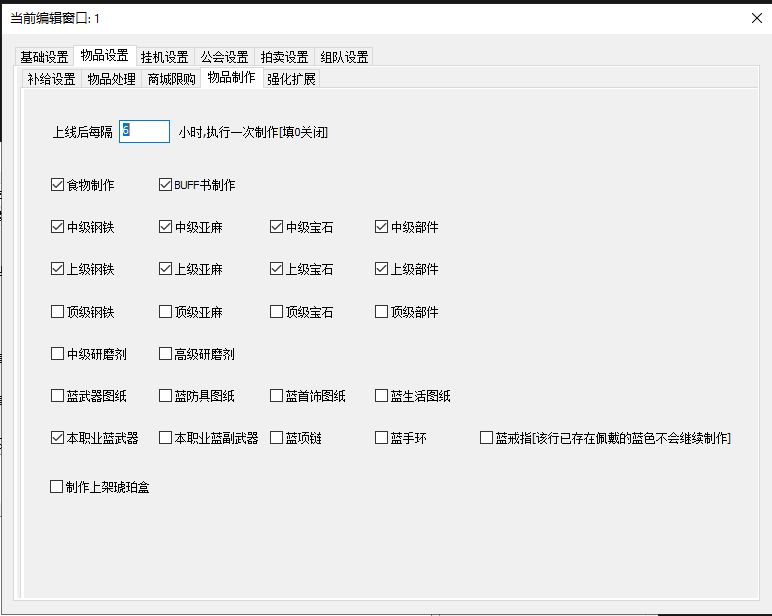
Giải thích:
Đây là tab 物品制作 (Chế tạo vật phẩm), cho phép bạn cấu hình tự động chế tạo các vật phẩm trong game.
1. Cài đặt chu kỳ chế tạo
上线后每隔 [Số] 小时,执行一次制作[填0关闭] → Sau khi đăng nhập, mỗi [Số] giờ, thực hiện một lần chế tạo [Điền 0 để tắt]
Thiết lập chu kỳ tự động chế tạo (ví dụ: 3 giờ)
Điền 0 để tắt tính năng tự động chế tạo
2. Danh sách vật phẩm chế tạo
Các checkbox để chọn vật phẩm sẽ tự động chế tạo:
Hàng 1 - Cơ bản:
食物制作 → Chế tạo thức ăn: Tự động chế tạo thức ăn
BUFF书制作 → Chế tạo sách BUFF: Tự động chế tạo sách tăng sức mạnh
Hàng 2 - Vật liệu trung cấp:
中级钢铁 → Thép trung cấp
中级亚麻 → Lanh trung cấp
中级宝石 → Đá quý trung cấp
中级部件 → Linh kiện trung cấp
Hàng 3 - Vật liệu cao cấp:
上级钢铁 → Thép cao cấp
上级亚麻 → Lanh cao cấp
上级宝石 → Đá quý cao cấp
上级部件 → Linh kiện cao cấp
Hàng 4 - Vật liệu đỉnh cao:
顶级钢铁 → Thép đỉnh cao
顶级亚麻 → Lanh đỉnh cao
顶级宝石 → Đá quý đỉnh cao
顶级部件 → Linh kiện đỉnh cao
Hàng 5 - Chất mài:
中级研磨剂 → Chất mài trung cấp
高级研磨剂 → Chất mài cao cấp
Hàng 6 - Bản vẽ màu xanh:
蓝武器图纸 → Bản vẽ vũ khí xanh
蓝防具图纸 → Bản vẽ giáp xanh
蓝首饰图纸 → Bản vẽ trang sức xanh
蓝生活图纸 → Bản vẽ sinh hoạt xanh
Hàng 7 - Trang bị màu xanh:
本职业蓝武器 → Vũ khí xanh của nghề này: Chế tạo vũ khí xanh cho nghề nghiệp hiện tại
本职业蓝副武器 → Vũ khí phụ xanh của nghề này
蓝项链 → Vòng cổ xanh
蓝手环 → Vòng tay xanh
蓝戒指[该行已存在佩戴的蓝色不会继续制作] → Nhẫn xanh [Nếu đã có nhẫn xanh đang đeo thì sẽ không tiếp tục chế tạo]
Hàng 8 - Hộp hổ phách:
制作上架琥珀盒 → Chế tạo và đăng bán hộp hổ phách: Chế tạo hộp hổ phách và đăng lên chợ
💡 Lưu ý: Tool sẽ tự động chế tạo các vật phẩm đã chọn theo chu kỳ đã đặt. Đảm bảo có đủ nguyên liệu trước khi bật tính năng này.
Ảnh 2.5: 强化扩展 (Nâng cấp và mở rộng)
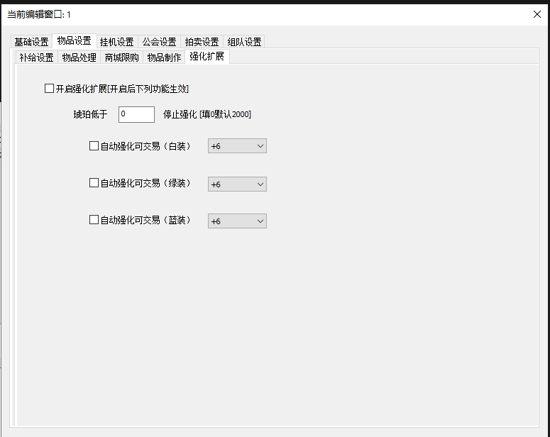
Giải thích:
Đây là tab 强化扩展 (Nâng cấp và mở rộng), cho phép bạn cấu hình tự động nâng cấp trang bị có thể giao dịch.
1. Bật/tắt tính năng
开启强化扩展 [开启后下列功能生效] → Bật nâng cấp mở rộng [Sau khi bật, các chức năng sau sẽ có hiệu lực]
Checkbox để bật/tắt toàn bộ tính năng nâng cấp tự động
Chỉ khi checkbox này được bật, các cài đặt phía dưới mới có hiệu lực
2. Ngưỡng Hổ phách
琥珀低于 [Số] 停止强化 [填0默认2000] → Khi Hổ phách < [Số] thì dừng nâng cấp [Điền 0 = mặc định 2000]
Khi số lượng Hổ phách xuống dưới ngưỡng này, sẽ dừng tự động nâng cấp
Mặc định: 2000 nếu điền 0
Giúp bảo toàn tài nguyên quan trọng
3. Nâng cấp tự động theo độ hiếm trang bị
Có 3 phần tương tự cho 3 độ hiếm trang bị:
Trang bị trắng (白装):
自动强化可交易(白装) → Tự động nâng cấp trang bị có thể giao dịch (trắng): Checkbox bật/tắt
Dropdown cấp độ nâng cấp: Chọn cấp độ nâng cấp đến (ví dụ: +6)
Các option có thể: +1, +3, +6, +9, +12, v.v.
Trang bị xanh lá (绿装):
自动强化可交易(绿装) → Tự động nâng cấp trang bị có thể giao dịch (xanh lá): Checkbox bật/tắt
Dropdown cấp độ nâng cấp: Chọn cấp độ nâng cấp đến (ví dụ: +6)
Trang bị xanh dương (蓝装):
自动强化可交易(蓝装) → Tự động nâng cấp trang bị có thể giao dịch (xanh dương): Checkbox bật/tắt
Dropdown cấp độ nâng cấp: Chọn cấp độ nâng cấp đến (ví dụ: +6)
⚠️ Cảnh báo: Tính năng này sẽ tự động nâng cấp trang bị có thể giao dịch, tiêu tốn Hổ phách. Đảm bảo đã thiết lập ngưỡng Hổ phách phù hợp để tránh tiêu hết tài nguyên.
Cài đặt treo máy (挂机设置)
Phần này cho phép bạn cấu hình chi tiết các điểm và quy tắc treo máy tự động, bao gồm đơn điểm, đa điểm, phó bản và các thiết lập bảo vệ.
Ảnh 3.1: 单点挂机 (Treo máy đơn điểm)
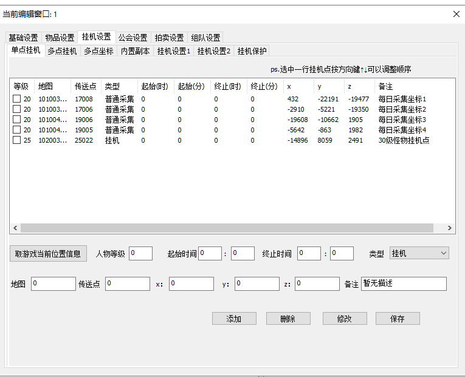
Giải thích:
Đây là tab 单点挂机 (Treo máy đơn điểm), cho phép bạn cấu hình treo máy tại một điểm cố định. Giao diện bao gồm bảng danh sách điểm treo máy và khu vực nhập liệu để thêm/sửa/xóa điểm.
1. Hướng dẫn sử dụng
ps.选中一行挂机点按方向键可以调整顺序 → ps. Chọn một hàng điểm treo máy và nhấn phím mũi tên để điều chỉnh thứ tự
Hướng dẫn: Chọn một hàng trong bảng và dùng phím mũi tên ↑↓ để sắp xếp lại thứ tự các điểm treo máy
2. Bảng danh sách điểm treo máy
Bảng hiển thị danh sách các điểm treo máy/thu thập đã được cấu hình với các cột:
等级 → Cấp độ: Cấp độ yêu cầu hoặc cấp độ nhân vật khi thực hiện hành động
地图 → Bản đồ: Mã hoặc tên bản đồ nơi điểm treo máy/thu thập được đặt
传送点 → Điểm dịch chuyển: Mã hoặc ID của điểm dịch chuyển liên quan
类型 → Loại: Loại hành động tại điểm này
普通采集 → Thu thập thông thường: Thu thập tài nguyên
挂机 → Treo máy: Treo máy để farm quái vật
起始(时) → Bắt đầu (giờ): Giờ bắt đầu thực hiện hành động
起始(分) → Bắt đầu (phút): Phút bắt đầu thực hiện hành động
终止(时) → Kết thúc (giờ): Giờ kết thúc thực hiện hành động
终止(分) → Kết thúc (phút): Phút kết thúc thực hiện hành động
x, y, z: Tọa độ không gian của điểm treo máy/thu thập trong game
备注 → Ghi chú: Mô tả ngắn gọn về điểm treo máy
Ví dụ dữ liệu trong bảng:
Hàng 1: Cấp 20, Bản đồ 101003..., Điểm dịch chuyển 17008, Loại "普通采集" (Thu thập thông thường), Thời gian 0:0 đến 0:0, Tọa độ (432, -22191, -19477), Ghi chú "每日采集坐标1" (Tọa độ thu thập hàng ngày 1)
Hàng 2: Cấp 20, Bản đồ 101003..., Điểm dịch chuyển 17006, Loại "普通采集", Thời gian 0:0 đến 0:0, Tọa độ (-2910, -5221, -19350), Ghi chú "每日采集坐标2" (Tọa độ thu thập hàng ngày 2)
Hàng 3: Cấp 20, Bản đồ 101004..., Điểm dịch chuyển 19006, Loại "普通采集", Thời gian 0:0 đến 0:0, Tọa độ (-19608, -10662, 1905), Ghi chú "每日采集坐标3" (Tọa độ thu thập hàng ngày 3)
Hàng 4: Cấp 20, Bản đồ 101004..., Điểm dịch chuyển 19005, Loại "普通采集", Thời gian 0:0 đến 0:0, Tọa độ (-5642, -863, 1982), Ghi chú "每日采集坐标4" (Tọa độ thu thập hàng ngày 4)
Hàng 5: Cấp 25, Bản đồ 102003..., Điểm dịch chuyển 25022, Loại "挂机" (Treo máy), Thời gian 0:0 đến 0:0, Tọa độ (-14896, 8059, 2491), Ghi chú "30级怪物挂机点" (Điểm treo máy quái vật cấp 30)
3. Khu vực nhập liệu/chỉnh sửa điểm treo máy
Các trường để nhập thông tin điểm treo máy mới hoặc chỉnh sửa điểm đã có:
取游戏当前位置信息 → Lấy thông tin vị trí hiện tại trong game: Nút để tự động điền thông tin về bản đồ, tọa độ x, y, z của nhân vật hiện tại vào các trường tương ứng
人物等级 → Cấp độ nhân vật: Trường nhập số cấp độ nhân vật (mặc định: 0)
起始时间 → Thời gian bắt đầu:
Hai trường nhập số cho giờ và phút (mặc định: 0 : 0)
Thiết lập thời gian bắt đầu thực hiện hành động
终止时间 → Thời gian kết thúc:
Hai trường nhập số cho giờ và phút (mặc định: 0 : 0)
Thiết lập thời gian kết thúc thực hiện hành động
类型 → Loại: Dropdown để chọn loại hành động
Hiện đang hiển thị: 挂机 (Treo máy)
Các tùy chọn khác có thể: "普通采集" (Thu thập thông thường), v.v.
地图 → Bản đồ: Trường nhập số mã bản đồ (mặc định: 0)
传送点 → Điểm dịch chuyển: Trường nhập số mã điểm dịch chuyển (mặc định: 0)
x, y, z: Các trường nhập số tọa độ không gian (mặc định: 0)
备注 → Ghi chú: Trường nhập văn bản mô tả điểm treo máy (mặc định: "暂无描述" - Tạm thời không có mô tả)
4. Các nút hành động
添加 → Thêm: Thêm điểm treo máy mới vào danh sách dựa trên thông tin đã nhập trong khu vực nhập liệu
删除 → Xóa: Xóa điểm treo máy đã chọn trong danh sách
修改 → Sửa đổi: Cập nhật thông tin của điểm treo máy đã chọn trong danh sách bằng dữ liệu từ khu vực nhập liệu
保存 → Lưu: Lưu lại tất cả các thay đổi trong cấu hình điểm treo máy
💡 Mẹo: Sử dụng nút 取游戏当前位置信息 để tự động lấy tọa độ hiện tại của nhân vật trong game, sau đó chỉnh sửa và nhấn 添加 để thêm điểm mới.
Ảnh 3.2: 多点挂机 (Treo máy đa điểm)
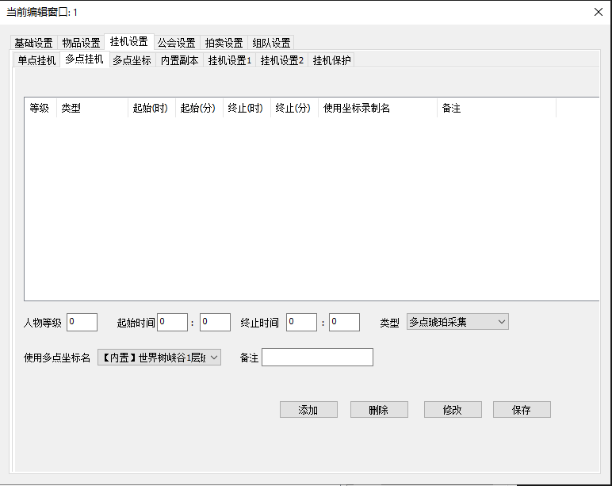
Giải thích:
Đây là tab 多点挂机 (Treo máy đa điểm), cho phép bạn thiết lập các điểm treo máy theo lịch trình và loại hoạt động cụ thể, sử dụng bộ tọa độ đa điểm đã được ghi lại.
1. Bảng danh sách cấu hình treo máy
Bảng hiển thị danh sách các cấu hình treo máy đa điểm đã được tạo với các cột:
等级 → Cấp độ: Cấp độ yêu cầu của nhân vật để thực hiện cấu hình này
类型 → Loại: Loại hoạt động treo máy (ví dụ: thu thập, chiến đấu)
起始(时) → Bắt đầu (giờ): Giờ bắt đầu của hoạt động treo máy
起始(分) → Bắt đầu (phút): Phút bắt đầu của hoạt động treo máy
终止(时) → Kết thúc (giờ): Giờ kết thúc của hoạt động treo máy
终止(分) → Kết thúc (phút): Phút kết thúc của hoạt động treo máy
使用坐标录制名 → Tên bộ tọa độ đã ghi: Tên của bộ tọa độ đa điểm được sử dụng cho hoạt động này (được quản lý trong tab "多点坐标")
备注 → Ghi chú: Ghi chú hoặc mô tả thêm về cấu hình
💡 Lưu ý: Bảng này sẽ hiển thị các cấu hình sau khi bạn thêm chúng. Ban đầu bảng có thể trống.
2. Khu vực nhập liệu và điều khiển
Các trường để nhập thông tin cho một cấu hình treo máy mới hoặc chỉnh sửa cấu hình hiện có:
人物等级 → Cấp độ nhân vật:
Ô nhập số để chỉ định cấp độ nhân vật tối thiểu hoặc cụ thể cho hoạt động treo máy này (mặc định: 0)
起始时间 → Thời gian bắt đầu:
Hai ô nhập số cho giờ và phút (mặc định: 0 : 0)
Thiết lập giờ và phút bắt đầu của hoạt động treo máy
终止时间 → Thời gian kết thúc:
Hai ô nhập số cho giờ và phút (mặc định: 0 : 0)
Thiết lập giờ và phút kết thúc của hoạt động treo máy
类型 → Loại: Dropdown để chọn loại hoạt động treo máy
Hiện đang chọn: 多点琥珀采集 → Thu thập Hổ phách đa điểm: Thu thập Hổ phách tại nhiều điểm
Các tùy chọn khác có thể có trong dropdown này sẽ được giải thích khi bạn mở dropdown
使用多点坐标名 → Tên bộ tọa độ đa điểm sử dụng: Dropdown để chọn bộ tọa độ đa điểm
Hiện đang chọn: 【内置】世界树峡谷1层班 → [Tích hợp sẵn] Lớp 1 Thung lũng Cây Thế giới: Bộ tọa độ đa điểm đã được ghi lại hoặc tích hợp sẵn
Các tùy chọn trong dropdown này là các bộ tọa độ đa điểm đã được tạo trong tab "多点坐标" hoặc các bộ tọa độ tích hợp sẵn
Script sẽ sử dụng bộ tọa độ này để di chuyển giữa các điểm treo máy
备注 → Ghi chú:
Ô nhập văn bản để thêm ghi chú cho cấu hình treo máy này (mặc định: trống)
3. Các nút hành động
添加 → Thêm: Thêm cấu hình treo máy mới vào bảng dựa trên thông tin đã nhập trong khu vực nhập liệu
删除 → Xóa: Xóa cấu hình treo máy đã chọn khỏi bảng
修改 → Sửa đổi: Cập nhật thông tin của cấu hình treo máy đã chọn trong bảng bằng dữ liệu từ khu vực nhập liệu
保存 → Lưu: Lưu tất cả các thay đổi và cấu hình treo máy đã thiết lập
💡 Mẹo: Bạn cần tạo bộ tọa độ đa điểm trong tab 多点坐标 trước, sau đó quay lại đây để chọn bộ tọa độ đó trong dropdown 使用多点坐标名.
Ảnh 3.3: 多点坐标 (Tọa độ đa điểm)
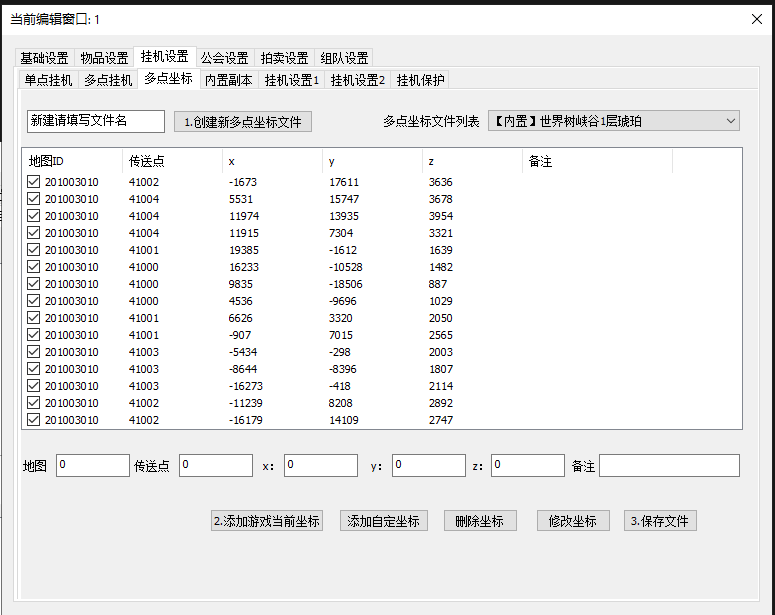
Giải thích:
Đây là tab 多点坐标 (Tọa độ đa điểm), nơi bạn có thể quản lý các tập tin tọa độ để treo máy tại nhiều điểm khác nhau. Giao diện này cho phép bạn tạo, chọn, chỉnh sửa và lưu các danh sách tọa độ.
1. Quản lý tệp tọa độ
新建请填写文件名 → Vui lòng nhập tên tệp mới:
Ô nhập tên cho tệp tọa độ mới mà bạn muốn tạo
1.创建新多点坐标文件 → 1. Tạo tệp tọa độ đa điểm mới:
Nút để tạo một tệp tọa độ mới với tên đã nhập trong ô phía trên
多点坐标文件列表 → Danh sách tệp tọa độ đa điểm:
Dropdown để chọn tệp tọa độ hiện có hoặc tích hợp sẵn
Hiện đang chọn: 【内置】世界树峡谷1层琥珀 → [Tích hợp sẵn] Hổ phách tầng 1 Thung lũng Cây Thế giới
2. Các tùy chọn trong dropdown "多点坐标文件列表" (Ảnh 3.3.1)
Dropdown này chứa danh sách các tệp tọa độ đa điểm đã được tạo hoặc tích hợp sẵn:
【内置】世界树峡谷1层琥珀 → [Tích hợp sẵn] Hổ phách tầng 1 Thung lũng Cây Thế giới
【内置】伊登山谷全图扫描采集 → [Tích hợp sẵn] Thung lũng Núi Eden Quét toàn bản đồ và Thu thập
【内置】格拉希尔森林1 → [Tích hợp sẵn] Rừng Grasil 1
【内置】洞穴巨人墓地1层 → [Tích hợp sẵn] Mộ Người khổng lồ Hang động Tầng 1
【内置】洞穴巨人墓地2层 → [Tích hợp sẵn] Mộ Người khổng lồ Hang động Tầng 2
【内置】赫尔莫采集 → [Tích hợp sẵn] Thu thập Helmo
【内置】阿斯加德--洞穴巨人遗迹上层 → [Tích hợp sẵn] Asgard--Di tích Người khổng lồ Hang động Tầng trên
【内置】阿斯加德--洞穴巨人遗迹下层扫描采集 → [Tích hợp sẵn] Asgard--Di tích Người khổng lồ Hang động Tầng dưới Quét và Thu thập
💡 Lưu ý: Các tệp có tiền tố 【内置】 (Tích hợp sẵn) là các tệp tọa độ đã được tích hợp sẵn trong tool. Bạn cũng có thể tạo tệp tọa độ mới của riêng mình.
3. Bảng danh sách tọa độ
Bảng hiển thị các điểm tọa độ đã được thêm vào tệp hiện tại. Mỗi hàng có một checkbox để chọn/bỏ chọn điểm tọa độ. Các cột bao gồm:
地图ID → ID Bản đồ: Mã định danh của bản đồ nơi điểm tọa độ được đặt
传送点 → Điểm dịch chuyển: Mã hoặc ID của điểm dịch chuyển liên quan
x: Tọa độ X trong không gian game
y: Tọa độ Y trong không gian game
z: Tọa độ Z trong không gian game
备注 → Ghi chú: Ghi chú thêm cho điểm tọa độ (ví dụ: tên khu vực, mục đích sử dụng)
4. Khu vực nhập liệu tọa độ mới/chỉnh sửa
Các ô nhập liệu để thêm hoặc chỉnh sửa tọa độ:
地图 → Bản đồ: Ô nhập số cho ID bản đồ (mặc định: 0)
传送点 → Điểm dịch chuyển: Ô nhập số cho ID điểm dịch chuyển (mặc định: 0)
x: Ô nhập số cho tọa độ X (mặc định: 0)
y: Ô nhập số cho tọa độ Y (mặc định: 0)
z: Ô nhập số cho tọa độ Z (mặc định: 0)
备注 → Ghi chú: Ô nhập văn bản để thêm ghi chú cho điểm tọa độ (ví dụ: tên khu vực, mục đích) (mặc định: trống)
5. Các nút hành động
2.添加游戏当前坐标 → 2. Thêm tọa độ hiện tại trong game:
Nút này tự động lấy tọa độ hiện tại của nhân vật trong game và thêm vào danh sách
Rất tiện lợi khi bạn đang ở trong game và muốn ghi lại vị trí hiện tại
添加自定坐标 → Thêm tọa độ tùy chỉnh:
Thêm một điểm tọa độ mới dựa trên dữ liệu đã nhập thủ công vào các ô nhập liệu phía trên
删除坐标 → Xóa tọa độ:
Xóa các điểm tọa độ đã chọn (đã đánh dấu checkbox) trong bảng
修改坐标 → Sửa tọa độ:
Chỉnh sửa thông tin của điểm tọa độ đã chọn trong bảng bằng dữ liệu từ khu vực nhập liệu
Chọn một hàng trong bảng, chỉnh sửa thông tin trong các ô nhập liệu, sau đó nhấn nút này
3.保存文件 → 3. Lưu tệp:
Lưu tất cả các thay đổi vào tệp tọa độ hiện tại (tệp đang được chọn trong dropdown)
Quan trọng: Nhớ nhấn nút này sau khi thực hiện các thay đổi để lưu lại cấu hình
⚠️ Lưu ý: Sau khi thêm, sửa hoặc xóa tọa độ, bạn phải nhấn nút 保存文件 để lưu các thay đổi. Nếu không lưu, các thay đổi sẽ bị mất khi đóng cửa sổ.
Ảnh 3.4: 内置副本 (Phó bản tích hợp)
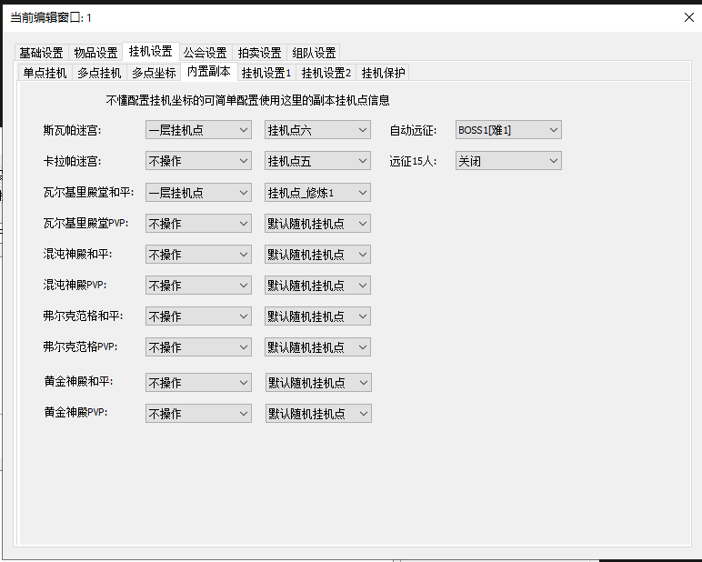
Giải thích:
Đây là tab 内置副本 (Phó bản tích hợp), nơi bạn có thể cấu hình việc tự động tham gia và hoàn thành các phó bản (dungeon) có sẵn trong game.
1. Cấu hình Phó bản
是否执行内置副本 → Có thực hiện phó bản tích hợp không:
Checkbox để bật/tắt chức năng tự động thực hiện phó bản
Khi được bật, tool sẽ tự động tham gia và hoàn thành các phó bản đã được thêm vào danh sách
副本选择 → Chọn phó bản:
Dropdown để chọn phó bản muốn thêm vào danh sách
Ví dụ các phó bản có thể chọn: 斯瓦帕迷宫 → Mê cung Swamp, v.v.
添加 → Thêm:
Nút để thêm phó bản đã chọn từ dropdown vào danh sách bên dưới
2. Bảng danh sách phó bản
Bảng hiển thị các phó bản đã được thêm vào và cấu hình với các cột:
副本名称 → Tên phó bản: Tên của phó bản (ví dụ: 斯瓦帕迷宫 - Mê cung Swamp)
执行次数 → Số lần thực hiện: Số lần phó bản này sẽ được thực hiện tự động (có thể chỉnh sửa)
操作 → Thao tác:
Các hành động có thể thực hiện với phó bản trong danh sách
删除 → Xóa: Xóa phó bản khỏi danh sách
3. Cấu hình Viễn chinh tự động
Phần này cho phép bạn thiết lập các tùy chọn liên quan đến viễn chinh (expedition) tự động:
自动远征 → Viễn chinh tự động:
Dropdown để chọn mục tiêu viễn chinh tự động
Ví dụ: BOSS1[难1] → BOSS1 [Khó 1]: Tự động tham gia viễn chinh BOSS1 ở độ khó 1
Có thể có các tùy chọn khác như BOSS2, BOSS3, v.v. với các độ khó khác nhau
远征15人 → Viễn chinh 15 người:
Dropdown để bật/tắt chế độ viễn chinh 15 người
Ví dụ: 关闭 → Tắt: Không sử dụng chế độ viễn chinh 15 người
Các tùy chọn khác có thể: 开启 (Bật), v.v.
💡 Lưu ý: Việc cấu hình phó bản và viễn chinh tự động giúp tối ưu hóa quá trình cày cuốc, thu thập tài nguyên và trang bị. Nhớ bật checkbox 是否执行内置副本 để kích hoạt tính năng.
Ảnh 3.5: 挂机设置1 (Cài đặt treo máy 1)
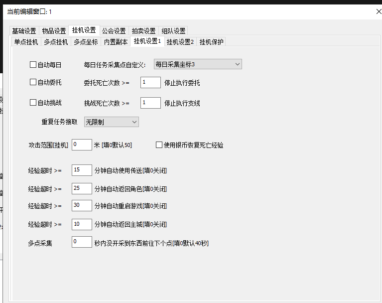
Giải thích:
Đây là tab 挂机设置1 (Cài đặt treo máy 1), tập trung vào việc tùy chỉnh các điểm thu thập cho nhiệm vụ hàng ngày và các quy tắc liên quan đến số lần chết.
1. Tùy chỉnh điểm thu thập nhiệm vụ hàng ngày
每日任务采集点自定义 → Tùy chỉnh điểm thu thập nhiệm vụ hàng ngày:
Dropdown để chọn cấu hình điểm thu thập đã được định nghĩa trước hoặc tùy chỉnh cho các nhiệm vụ hàng ngày
Hiện đang chọn: 每日采集坐标3 → Tọa độ thu thập hàng ngày 3
2. Các tùy chọn trong dropdown "每日任务采集点自定义" (Ảnh 3.5.1)
Dropdown này chứa danh sách các điểm thu thập/treo máy có sẵn:
默认内置 → Mặc định tích hợp sẵn: Sử dụng cấu hình điểm thu thập mặc định có sẵn trong tool
每日采集坐标1 → Tọa độ thu thập hàng ngày 1: Sử dụng tọa độ thu thập hàng ngày số 1 (được cấu hình trong tab "单点挂机")
每日采集坐标2 → Tọa độ thu thập hàng ngày 2: Sử dụng tọa độ thu thập hàng ngày số 2
每日采集坐标3 → Tọa độ thu thập hàng ngày 3: Sử dụng tọa độ thu thập hàng ngày số 3 (đang được chọn)
每日采集坐标4 → Tọa độ thu thập hàng ngày 4: Sử dụng tọa độ thu thập hàng ngày số 4
30级怪物挂机点 → Điểm treo máy quái vật cấp 30: Sử dụng điểm treo máy quái vật cấp 30 (được cấu hình trong tab "单点挂机")
💡 Lưu ý: Các tọa độ thu thập hàng ngày (每日采集坐标1-4) được cấu hình trong tab 单点挂机. Bạn cần tạo các điểm này trước khi chọn chúng ở đây.
3. Quy tắc số lần chết
Phần này cho phép bạn thiết lập các quy tắc về số lần chết tối đa trước khi thực hiện hành động tự động:
委托死亡次数 >= → Số lần chết ủy thác >=:
Ô nhập số để thiết lập ngưỡng số lần chết trong nhiệm vụ ủy thác (mặc định: 1)
Khi số lần chết trong nhiệm vụ ủy thác đạt đến ngưỡng này, tool có thể thực hiện hành động tự động (ví dụ: dừng nhiệm vụ, hồi sinh, hoặc chuyển sang nhiệm vụ khác)
挑战死亡次数 >= → Số lần chết thử thách >=:
Ô nhập số để thiết lập ngưỡng số lần chết trong nhiệm vụ thử thách (mặc định: 1)
Tương tự như trên, khi đạt đến ngưỡng này trong nhiệm vụ thử thách, tool sẽ thực hiện hành động tự động
⚠️ Lưu ý: Các thiết lập về số lần chết giúp bảo vệ nhân vật khỏi việc chết quá nhiều lần liên tiếp, giúp tiết kiệm tài nguyên và thời gian. Điều chỉnh các giá trị này phù hợp với cấp độ và trang bị của nhân vật.
Ảnh 3.6: 挂机设置2 (Cài đặt treo máy 2)
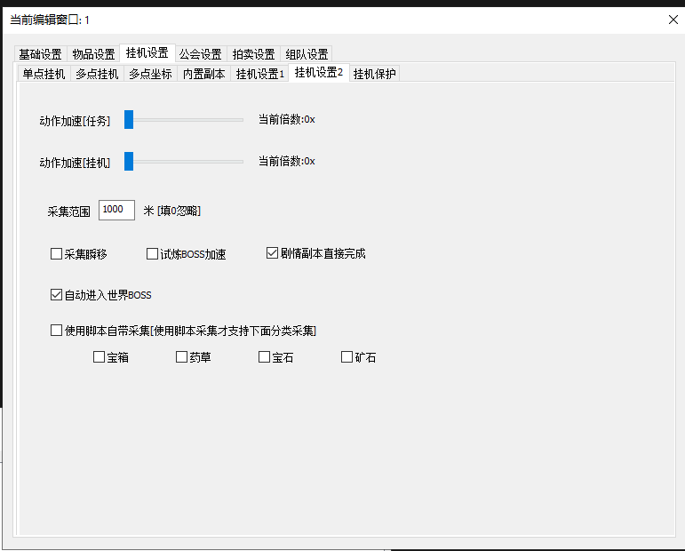
Giải thích:
Đây là tab 挂机设置2 (Cài đặt treo máy 2), nơi bạn có thể tinh chỉnh các thiết lập nâng cao liên quan đến tốc độ hành động, phạm vi thu thập và các tùy chọn tự động hóa khác trong quá trình treo máy.
1. Tăng tốc hành động
动作加速[任务] → Tăng tốc hành động [Nhiệm vụ]:
Thanh trượt để điều chỉnh tốc độ thực hiện các nhiệm vụ
Hiển thị: 当前倍数:0x → Hệ số hiện tại: 0x: Cho biết mức độ tăng tốc đang được áp dụng
Tăng giá trị này sẽ làm cho nhân vật thực hiện nhiệm vụ nhanh hơn
动作加速[挂机] → Tăng tốc hành động [Treo máy]:
Thanh trượt để điều chỉnh tốc độ các hành động khi treo máy (AFK)
Hiển thị: 当前倍数:0x → Hệ số hiện tại: 0x: Cho biết mức độ tăng tốc đang được áp dụng
Tăng giá trị này sẽ làm cho nhân vật thực hiện các hành động treo máy nhanh hơn
2. Phạm vi thu thập
采集范围 → Phạm vi thu thập:
Ô nhập số với giá trị mặc định là 1000, theo sau là đơn vị 米[填0忽略] → mét [điền 0 để bỏ qua]
Thiết lập phạm vi mà nhân vật sẽ tự động thu thập vật phẩm hoặc tài nguyên
Nếu điền 0, có thể có nghĩa là không giới hạn hoặc sử dụng phạm vi mặc định của script
3. Các tùy chọn tự động hóa (Checkboxes)
采集瞬移 → Thu thập dịch chuyển tức thời:
Checkbox: Khi được chọn, nhân vật có thể dịch chuyển tức thời đến vị trí vật phẩm để thu thập
Giúp tiết kiệm thời gian di chuyển khi thu thập
试炼BOSS加速 → Tăng tốc BOSS Thử thách:
Checkbox: Khi được chọn, có thể tăng tốc độ chiến đấu hoặc bỏ qua một số hoạt ảnh khi đối phó với BOSS trong các thử thách
Giúp hoàn thành thử thách BOSS nhanh hơn
剧情副本直接完成 → Hoàn thành trực tiếp Phó bản cốt truyện:
Checkbox (đang được đánh dấu): Khi được chọn, các phó bản cốt truyện có thể được hoàn thành ngay lập tức hoặc bỏ qua các bước không cần thiết
Tiết kiệm thời gian khi làm nhiệm vụ cốt truyện
自动进入世界BOSS → Tự động vào BOSS Thế giới:
Checkbox (đang được đánh dấu): Khi được chọn, nhân vật sẽ tự động tham gia các sự kiện BOSS Thế giới khi chúng xuất hiện
Không cần can thiệp thủ công để tham gia sự kiện
使用脚本自带采集[使用脚本采集才支持下面分类采集] → Sử dụng tính năng thu thập của script [Chỉ khi sử dụng tính năng thu thập của script mới hỗ trợ phân loại thu thập bên dưới]:
Checkbox: Khi được chọn, script sẽ sử dụng hệ thống thu thập riêng của nó
Mở khóa các tùy chọn phân loại thu thập bên dưới (phần 4)
Nếu không bật checkbox này, các tùy chọn phân loại thu thập bên dưới sẽ không hoạt động
4. Phân loại thu thập
Phần này chỉ hoạt động khi tùy chọn 使用脚本自带采集 được bật:
宝箱 → Rương báu:
Checkbox: Khi được chọn, script sẽ ưu tiên thu thập rương báu
药草 → Thảo dược:
Checkbox: Khi được chọn, script sẽ ưu tiên thu thập thảo dược
宝石 → Đá quý:
Checkbox: Khi được chọn, script sẽ ưu tiên thu thập đá quý
矿石 → Quặng:
Checkbox: Khi được chọn, script sẽ ưu tiên thu thập quặng
💡 Mẹo: Các thiết lập tăng tốc có thể giúp tăng hiệu quả treo máy, nhưng cần cẩn thận để tránh bị phát hiện bởi hệ thống chống bot của game. Điều chỉnh phù hợp với nhu cầu của bạn.
Ảnh 3.7: 挂机保护 (Bảo vệ treo máy)
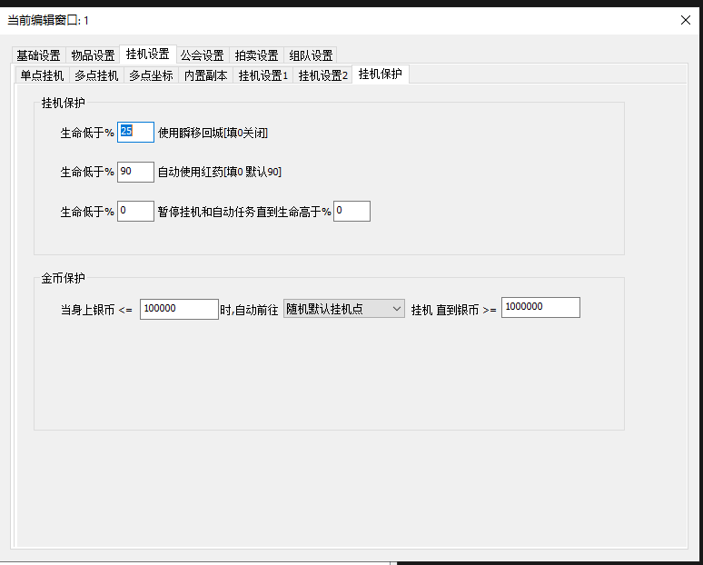
Giải thích:
Đây là tab 挂机保护 (Bảo vệ treo máy), nơi bạn có thể thiết lập các quy tắc tự động để bảo vệ nhân vật khi treo máy, dựa trên lượng máu và số lượng bạc.
1. 挂机保护 (Bảo vệ treo máy)
Phần này cho phép bạn thiết lập các quy tắc tự động bảo vệ nhân vật dựa trên lượng máu:
生命低于% → Máu dưới %:
Ô nhập số với giá trị mặc định là 25
Theo sau là: 使用瞬移回城[填0关闭] → Sử dụng dịch chuyển tức thời về thành [điền 0 để tắt]
Nếu máu nhân vật giảm xuống dưới 25%, hệ thống sẽ tự động sử dụng vật phẩm dịch chuyển tức thời để về thành
Điền 0 vào ô này để tắt chức năng
生命低于% → Máu dưới %:
Ô nhập số với giá trị mặc định là 90
Theo sau là: 自动使用红药[填0默认90] → Tự động sử dụng thuốc đỏ [điền 0 mặc định 90]
Nếu máu nhân vật giảm xuống dưới 90%, hệ thống sẽ tự động sử dụng thuốc đỏ (red potion) để hồi máu
Điền 0 để tắt chức năng, 90 là giá trị mặc định
生命低于% → Máu dưới %:
Ô nhập số thứ nhất với giá trị mặc định là 0
Theo sau là: 暂停挂机和自动任务直到生命高于% → Tạm dừng treo máy và nhiệm vụ tự động cho đến khi máu trên %
Ô nhập số thứ hai với giá trị mặc định là 0
Nếu máu nhân vật giảm xuống dưới ngưỡng thứ nhất (ví dụ: 0% hoặc một ngưỡng rất thấp), hệ thống sẽ tạm dừng tất cả các hoạt động treo máy và nhiệm vụ tự động
Các hoạt động sẽ tiếp tục khi máu nhân vật hồi phục lên trên ngưỡng thứ hai (ví dụ: 0% hoặc ngưỡng bạn đặt)
Thiết lập này giúp bảo vệ nhân vật khỏi việc chết liên tiếp
2. 金币保护 (Bảo vệ tiền vàng/bạc)
Phần này cho phép bạn thiết lập quy tắc tự động bảo vệ và kiếm tiền dựa trên số lượng bạc trên người:
当身上银币<= → Khi bạc trên người <=:
Ô nhập số với giá trị mặc định là 100000 (100,000 bạc)
时,自动前往 → , tự động đến:
Dropdown để chọn điểm đến khi kích hoạt bảo vệ
Hiện đang chọn: 随机默认挂机点 → Điểm treo máy mặc định ngẫu nhiên
Các tùy chọn khác có thể có trong dropdown này sẽ được hiển thị khi bạn mở dropdown
挂机 直到银币 >= → Treo máy cho đến khi bạc >=:
Ô nhập số với giá trị mặc định là 1000000 (1,000,000 bạc)
Giải thích toàn bộ quy tắc:
Nếu số lượng bạc trên người nhân vật giảm xuống 100,000 hoặc thấp hơn, nhân vật sẽ tự động di chuyển đến một điểm treo máy mặc định ngẫu nhiên (hoặc điểm bạn chọn trong dropdown)
Nhân vật sẽ tiếp tục treo máy tại điểm đó cho đến khi số lượng bạc trên người đạt 1,000,000 hoặc cao hơn
Thiết lập này giúp đảm bảo nhân vật luôn có đủ bạc để mua vật phẩm và thực hiện các hoạt động cần thiết
⚠️ Cảnh báo: Các thiết lập bảo vệ này rất quan trọng để tránh nhân vật chết hoặc hết tiền khi treo máy. Hãy điều chỉnh các ngưỡng phù hợp với cấp độ và trang bị của nhân vật.
💡 Mẹo: Đặt ngưỡng máu thấp hơn cho "使用瞬移回城" (ví dụ: 25%) và ngưỡng cao hơn cho "自动使用红药" (ví dụ: 90%) để tối ưu việc sử dụng vật phẩm. Đối với bảo vệ bạc, đặt ngưỡng dưới và trên phù hợp với nhu cầu chi tiêu của bạn.
Cài đặt bang hội (公会设置)
Phần này hướng dẫn cách cấu hình các thiết lập liên quan đến bang hội (guild), bao gồm thao tác bang hội, nhiệm vụ hàng ngày và cửa hàng bang hội.
Ảnh 4: 公会设置 (Cài đặt bang hội)
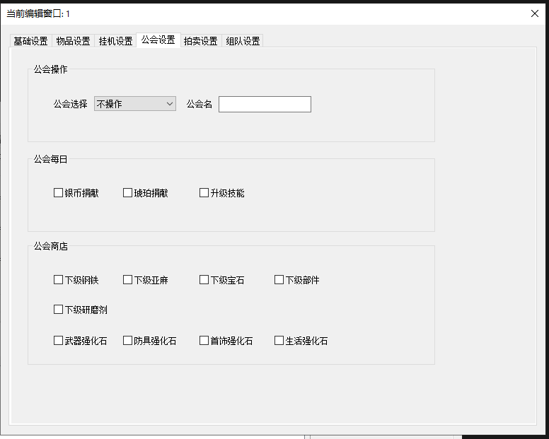
Giải thích:
Đây là tab 公会设置 (Cài đặt bang hội), nơi bạn có thể cấu hình các thiết lập liên quan đến bang hội, bao gồm thao tác bang hội, nhiệm vụ hàng ngày và mua hàng tại cửa hàng bang hội.
1. 公会操作 (Thao tác bang hội)
公会选择 → Chọn bang hội:
Dropdown để chọn thao tác liên quan đến bang hội
Hiện đang chọn: 不操作 → Không thao tác: Không thực hiện bất kỳ thao tác nào với bang hội
Các tùy chọn khác có thể có: Tham gia bang hội, Rời bang hội, Tạo bang hội, v.v.
公会名 → Tên bang hội:
Ô nhập văn bản để nhập tên bang hội (mặc định: trống)
Dùng khi cần tìm kiếm, tham gia hoặc tạo bang hội cụ thể
2. 公会每日 (Nhiệm vụ bang hội hàng ngày)
Các checkbox để tự động thực hiện các nhiệm vụ bang hội hàng ngày:
银币捐献 → Quyên góp bạc:
Checkbox: Khi được chọn, tự động quyên góp bạc cho bang hội mỗi ngày
琥珀捐献 → Quyên góp Hổ phách:
Checkbox: Khi được chọn, tự động quyên góp Hổ phách cho bang hội mỗi ngày
升级技能 → Nâng cấp kỹ năng:
Checkbox: Khi được chọn, tự động nâng cấp kỹ năng bang hội khi có đủ tài nguyên
3. 公会商店 (Cửa hàng bang hội)
Các checkbox để tự động mua vật phẩm từ cửa hàng bang hội:
Hàng 1 - Vật liệu cấp thấp:
下级钢铁 → Thép cấp thấp: Checkbox để tự động mua thép cấp thấp
下级亚麻 → Lanh cấp thấp: Checkbox để tự động mua lanh cấp thấp
下级宝石 → Đá quý cấp thấp: Checkbox để tự động mua đá quý cấp thấp
下级部件 → Linh kiện cấp thấp: Checkbox để tự động mua linh kiện cấp thấp
Hàng 2 - Vật liệu và đá nâng cấp:
下级研磨剂 → Chất mài cấp thấp: Checkbox để tự động mua chất mài cấp thấp
武器强化石 → Đá nâng cấp vũ khí: Checkbox để tự động mua đá nâng cấp vũ khí
防具强化石 → Đá nâng cấp giáp: Checkbox để tự động mua đá nâng cấp giáp
首饰强化石 → Đá nâng cấp trang sức: Checkbox để tự động mua đá nâng cấp trang sức
生活强化石 → Đá nâng cấp sinh hoạt: Checkbox để tự động mua đá nâng cấp sinh hoạt
💡 Lưu ý: Các thiết lập này giúp tự động hóa các hoạt động bang hội, giúp bạn không bỏ lỡ các nhiệm vụ hàng ngày và tận dụng tốt cửa hàng bang hội.
Cài đặt đấu giá (拍卖设置)
Phần này hướng dẫn cách cấu hình tự động đấu giá, bao gồm tự động đăng bán, tự động hạ giá và quản lý danh sách vật phẩm đấu giá.
Ảnh 5: 拍卖设置 (Cài đặt đấu giá)
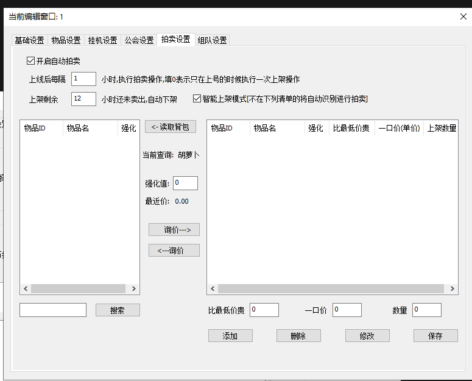
Giải thích:
Đây là tab 拍卖设置 (Cài đặt đấu giá), nơi bạn có thể cấu hình tự động đấu giá, bao gồm tự động đăng bán vật phẩm, tự động hạ giá và quản lý danh sách vật phẩm đấu giá.
1. Bật/tắt và cài đặt chung
开启自动拍卖 → Bật đấu giá tự động:
Checkbox (đang được đánh dấu): Khi được chọn, kích hoạt tính năng tự động đấu giá
Chỉ khi checkbox này được bật, các thiết lập phía dưới mới có hiệu lực
上线后每隔 [Số] 小时,执行拍卖操作,填0表示只在上号的时候执行一次上架操作 → Sau khi đăng nhập, mỗi [Số] giờ, thực hiện thao tác đấu giá, điền 0 nghĩa là chỉ thực hiện thao tác đăng bán một lần khi đăng nhập:
Ô nhập số với giá trị mặc định là 1
Thiết lập chu kỳ tự động thực hiện thao tác đấu giá (ví dụ: 1 giờ)
Điền 0 để chỉ đăng bán một lần khi đăng nhập, không lặp lại
上架剩余 [Số] 小时还未卖出,自动下架 → Đăng bán còn lại [Số] giờ chưa bán được, tự động hạ giá:
Ô nhập số với giá trị mặc định là 12
Nếu vật phẩm đã đăng bán 12 giờ mà chưa bán được, tự động hạ giá hoặc gỡ xuống
智能上架模式[不在下列清单的将自动识别进行拍卖] → Chế độ đăng bán thông minh [Vật phẩm không trong danh sách dưới đây sẽ tự động được nhận diện và đấu giá]:
Checkbox (đang được đánh dấu): Khi được chọn, tool sẽ tự động nhận diện và đấu giá các vật phẩm không có trong danh sách quản lý bên dưới
Giúp tự động hóa hoàn toàn quá trình đấu giá
2. Khu vực quản lý vật phẩm đấu giá
Giao diện được chia thành 2 phần: Bên trái (Tìm kiếm/Chọn vật phẩm) và Bên phải (Danh sách vật phẩm đấu giá).
Bên trái - Tìm kiếm/Chọn vật phẩm:
读取背包 → Đọc túi:
Nút để đọc danh sách vật phẩm từ túi và hiển thị trong bảng bên trái
Bảng hiển thị vật phẩm với các cột:
物品ID → ID vật phẩm: Mã định danh vật phẩm
物品名 → Tên vật phẩm: Tên vật phẩm
强化 → Nâng cấp: Mức độ nâng cấp của vật phẩm
搜索 → Tìm kiếm:
Nút tìm kiếm vật phẩm
Ô nhập liệu: Ô nhập để tìm kiếm vật phẩm (ví dụ: theo tên)
Hiển thị thông tin:
当前查询: 胡萝卜 → Truy vấn hiện tại: Cà rốt
强化值: 0 → Giá trị nâng cấp: 0
最近价: 0.00 → Giá gần đây: 0.00
询价 --> → Hỏi giá -->: Nút để tra cứu giá thị trường của vật phẩm
<-- 询价 → <-- Hỏi giá: Nút để tra cứu giá (có thể là hướng ngược lại)
Bên phải - Danh sách vật phẩm đấu giá:
Bảng danh sách vật phẩm đấu giá với các cột:
物品ID → ID vật phẩm
物品名 → Tên vật phẩm
强化 → Nâng cấp
比最低价贵 → Đắt hơn giá thấp nhất: Chênh lệch giá so với giá thấp nhất trên thị trường
一口价(单价) → Giá mua ngay (đơn giá): Giá mua ngay cho mỗi đơn vị
上架数量 → Số lượng đăng bán: Số lượng vật phẩm sẽ được đăng bán
Khu vực nhập liệu:
比最低价贵 [0] → Đắt hơn giá thấp nhất [0]: Ô nhập số để đặt chênh lệch giá so với giá thấp nhất (mặc định: 0)
一口价 [0] → Giá mua ngay [0]: Ô nhập số để đặt giá mua ngay (mặc định: 0)
数量 [0] → Số lượng [0]: Ô nhập số để đặt số lượng đăng bán (mặc định: 0)
Các nút hành động:
添加 → Thêm: Thêm vật phẩm vào danh sách đấu giá với thông tin đã nhập
删除 → Xóa: Xóa vật phẩm đã chọn khỏi danh sách đấu giá
修改 → Sửa: Sửa thông tin vật phẩm đã chọn trong danh sách
保存 → Lưu: Lưu tất cả các thay đổi trong danh sách đấu giá
💡 Mẹo: Sử dụng nút 询价 để tra cứu giá thị trường trước khi đặt giá, giúp đặt giá hợp lý và bán nhanh hơn.
Cài đặt tổ đội (组队设置)
Phần này hướng dẫn cách cấu hình các thiết lập liên quan đến tổ đội (team), bao gồm chế độ tổ đội, số lượng thành viên và các tùy chọn tự động.
Ảnh 6: 组队设置 (Cài đặt tổ đội)
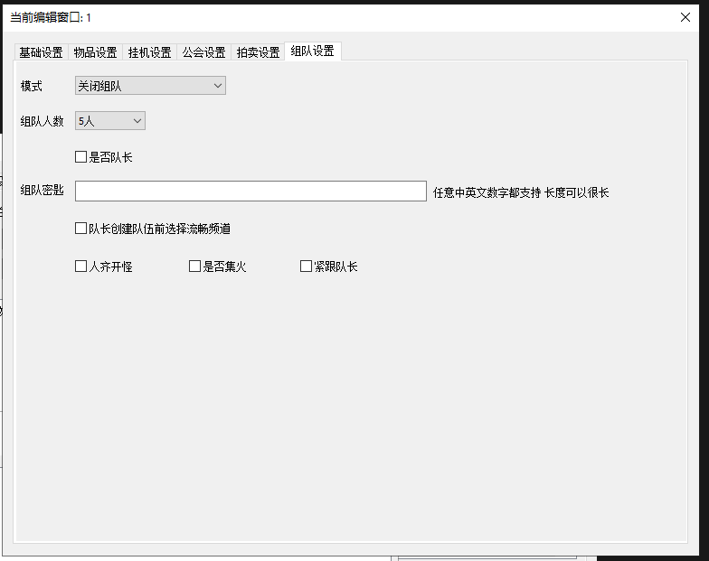
Giải thích:
Đây là tab 组队设置 (Cài đặt tổ đội), nơi bạn có thể cấu hình các thiết lập liên quan đến tổ đội, bao gồm chế độ tổ đội, số lượng thành viên, vai trò và các tùy chọn tự động.
1. Cài đặt cơ bản tổ đội
模式 → Chế độ:
Dropdown để chọn chế độ tổ đội
Hiện đang chọn: 关闭组队 → Tắt tổ đội: Không tham gia hoặc tạo tổ đội
Các tùy chọn khác có thể có: Tự động tham gia tổ đội, Tự động tạo tổ đội, v.v.
组队人数 → Số lượng thành viên tổ đội:
Dropdown để chọn số lượng thành viên trong tổ đội
Hiện đang chọn: 5人 → 5 người: Tổ đội gồm 5 thành viên
Các tùy chọn khác có thể: 3人 (3 người), 4人 (4 người), v.v.
是否队长 → Có phải đội trưởng không:
Checkbox (chưa được đánh dấu): Khi được chọn, nhân vật sẽ tự động làm đội trưởng
Nếu không chọn, nhân vật sẽ là thành viên thường
2. Cài đặt mật khẩu tổ đội
组队密匙 → Mật khẩu tổ đội:
Ô nhập văn bản để nhập mật khẩu tổ đội (mặc định: trống)
Mô tả bên cạnh: 任意中英文数字都支持 长度可以很长 → Hỗ trợ bất kỳ chữ Trung, Anh, số nào, độ dài có thể rất dài
Dùng để tham gia hoặc tạo tổ đội có mật khẩu
3. Cài đặt nâng cao
队长创建队伍前选择流畅频道 → Đội trưởng chọn kênh mượt trước khi tạo tổ đội:
Checkbox (chưa được đánh dấu): Khi được chọn, đội trưởng sẽ tự động chọn kênh có độ trễ thấp (mượt) trước khi tạo tổ đội
Giúp đảm bảo kết nối tốt cho cả tổ đội
4. Các tùy chọn tự động trong tổ đội
人齐开怪 → Đủ người mới bắt đầu đánh quái:
Checkbox (chưa được đánh dấu): Khi được chọn, chỉ khi đủ số lượng thành viên trong tổ đội thì mới bắt đầu đánh quái
Tránh bắt đầu sớm khi chưa đủ người
是否集火 → Có tập trung tấn công không:
Checkbox (chưa được đánh dấu): Khi được chọn, các thành viên sẽ tự động tập trung tấn công cùng một mục tiêu (focus fire)
Giúp tiêu diệt quái nhanh hơn và hiệu quả hơn
紧跟队长 → Theo sát đội trưởng:
Checkbox (chưa được đánh dấu): Khi được chọn, nhân vật sẽ tự động di chuyển theo sát đội trưởng
Giúp giữ tổ đội gần nhau và không bị lạc
💡 Lưu ý: Các thiết lập tổ đội giúp tự động hóa việc tham gia và hoạt động trong tổ đội, giúp farm hiệu quả hơn. Nhớ điều chỉnh các tùy chọn phù hợp với vai trò của nhân vật (đội trưởng hoặc thành viên).